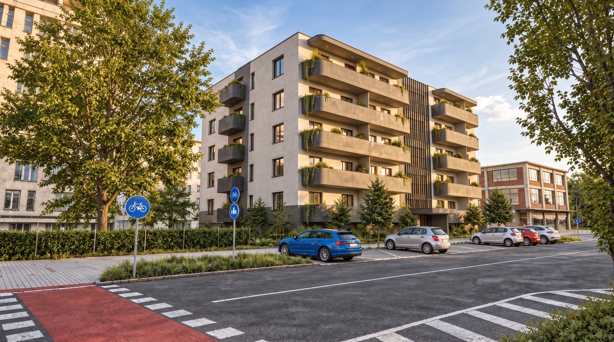
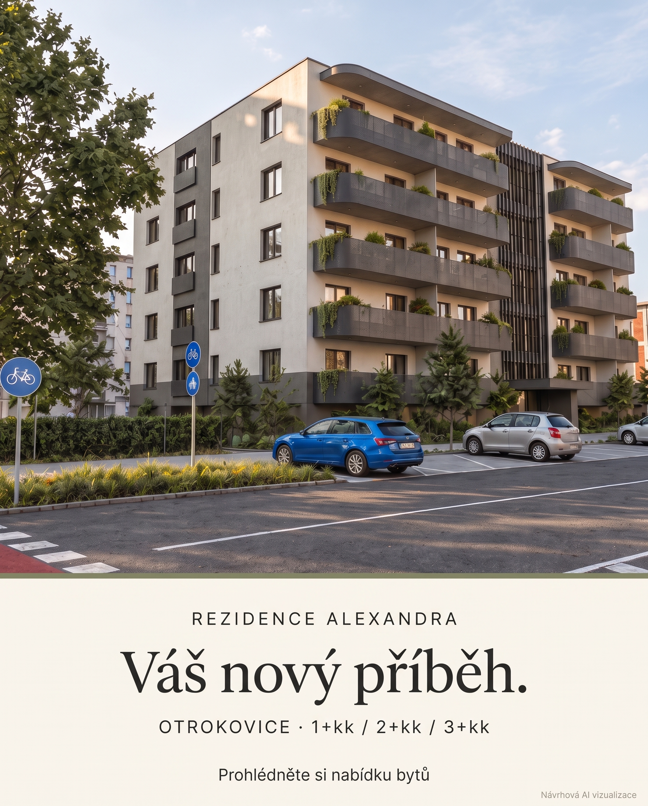
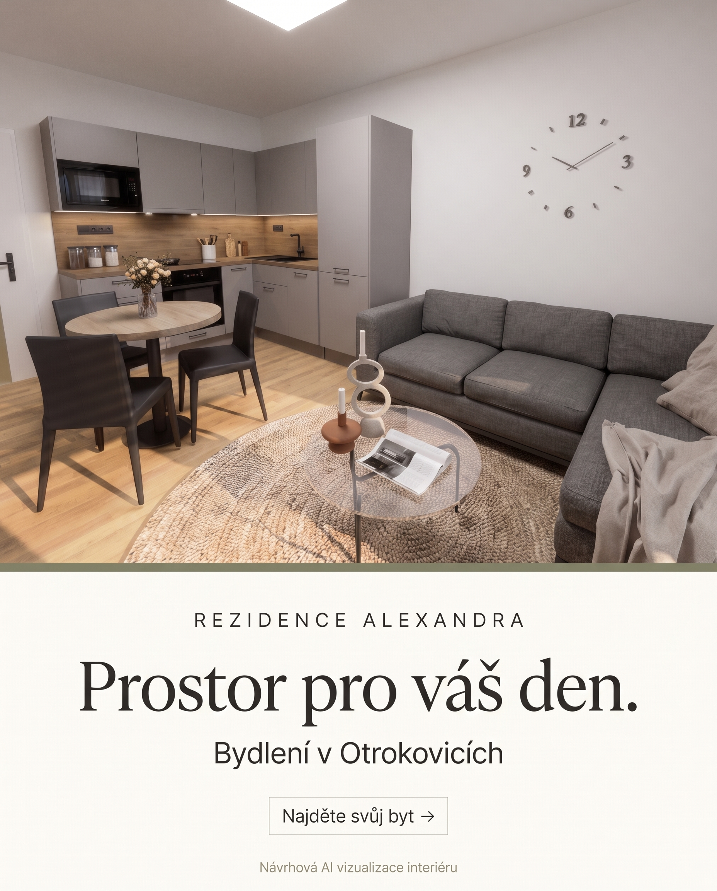

Alexandra · hlavní film, 30 sStáhnout film ↓


OD KONCEPTU K ZÁBĚRU
Otevřít storyboard ↗Storyboard kampaně.
Vizuální scénář, pořadí záběrů, práce se světlem, kamerou a českými texty. Samostatný podklad pro další produkci.
Filmová a obrazová podoba Alexandry. Vychází ze skutečných návrhových podkladů projektu a zachycuje atmosféru budoucího bydlení.
Návrhové AI filmy vytvořené z dodaných vizualizací přes Google Gemini Omni 1.1. Nejde o záznam dokončené stavby. Konečná architektura, materiály a vybavení podléhají potvrzení. Výstup 1080p; podle specifikace modelu jde o upscale.




Nové reklamní vizuály vznikly pomocí Google Nano Banana 2.1. Pro porovnání konečného řešení slouží původní vizualizace a výkresy v prezentaci projektu. Obě varianty bočních balkonů zůstávají otevřené.


Vizuální scénář, pořadí záběrů, práce se světlem, kamerou a českými texty. Samostatný podklad pro další produkci.
„Vaše nová kapitola.“
Velkorysá sazba, architektonická fotografie a střídmá paleta odvozená od fasády, interiérů a zeleně. Důraz na konkrétní prostor a čitelnou nabídku bytů.